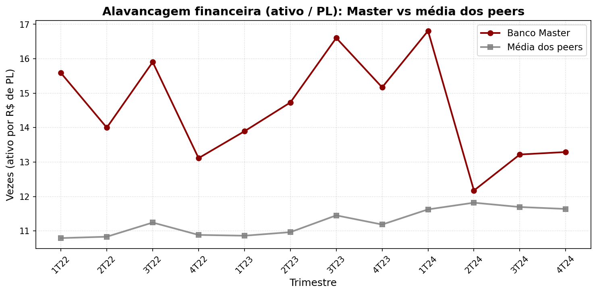
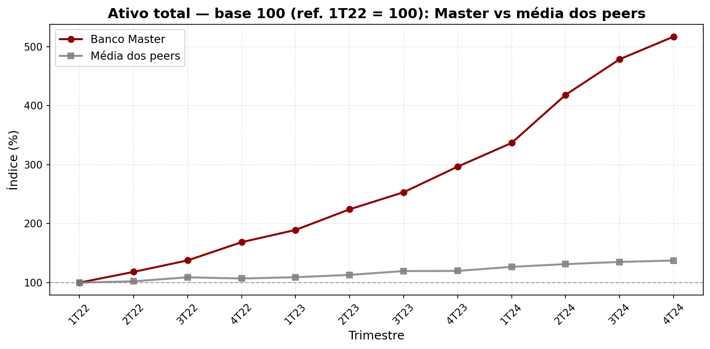
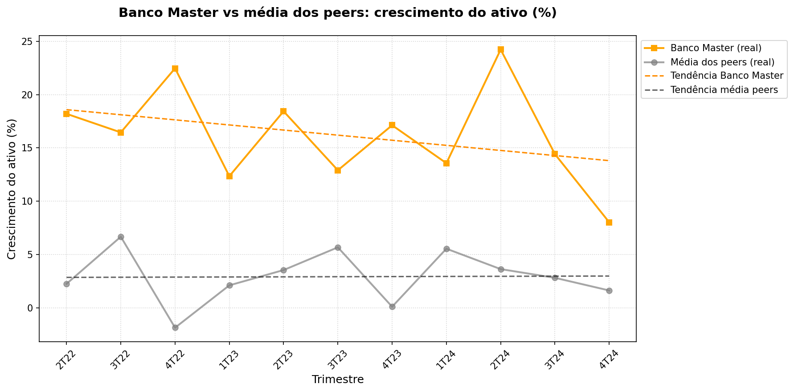

Esta página resume três leituras sobre o tamanho e a dinâmica do ativo em relação a um grupo de instituições comparáveis. Em cada aba há a definição da métrica, como interpretar o gráfico e ressalvas metodológicas.
Dados: arquivos CSV em data/extracao_*.csv (série trimestral). Peers: média aritmética das
instituições listadas, exceto o Banco Master.
Alavancagem aqui é o quociente ativo total ÷ patrimônio líquido, por trimestre. Indica quantas vezes o ativo é maior que o PL: valores mais altos significam mais ativos financiados por cada R$ de capital próprio (estrutura mais alavancada em sentido contábil).
O eixo horizontal mostra os trimestres (formato 1T24, 2T24…). O vertical é a alavancagem em “vezes”. A linha em vermelho escuro é o Banco Master; a linha em cinza é a média dos peers no mesmo trimestre. Pontos faltantes ou distorções podem surgir se o PL for muito baixo ou negativo em algum período.
Comparar Master à média dos peers ajuda a situar a instituição no grupo. Uma trajetória acima da média pode refletir maior uso de dívida em relação ao capital próprio; abaixo da média, estrutura menos alavancada — sempre em conjunto com qualidade do ativo, funding e regulação, que este gráfico não captura sozinho.
A média dos peers não é ponderada pelo tamanho do ativo de cada banco. O universo de instituições segue o que está nos CSVs. O indicador é sensível ao denominador (PL); interpretações exigem consistência dos dados trimestrais.

Para cada instituição, o ativo total é reescalado para um índice: o menor trimestre da amostra recebe valor 100; os trimestres seguintes mostram a evolução percentual relativa a essa referência. Assim dá para comparar a trajetória do tamanho do ativo sem depender da unidade absoluta.
O título indica qual trimestre foi usado como referência (100). O eixo vertical é o índice em %. A linha vermelha é o Banco Master; a cinza, a média dos peers. A linha tracejada horizontal em 100 marca a base. Crescimento acima de 100 indica ativo maior do que no trimestre de referência.
Este gráfico destaca crescimento relativo desde o início da janela observada. Master e média dos peers podem divergir se os bancos tiveram ritmos diferentes de expansão do ativo no período.
O índice depende do trimestre inicial da amostra: outra janela temporal mudaria a base. Não incorpora ajustes de risco ou composição do ativo. A média dos peers permanece não ponderada.

Para cada trimestre, utiliza-se a variável Asset Growth (%) dos dados: taxa percentual de crescimento do ativo. O gráfico traça a série do Banco Master e a média dos peers, e acrescenta linhas de tendência obtidas por regressão linear sobre o tempo (ordem dos trimestres), para suavizar a direção geral da série.
Linhas contínuas em laranja (Master) e cinza (média dos peers) são os valores observados por trimestre. As linhas tracejadas na mesma cor família são as tendências estimadas. A legenda pode aparecer à direita do gráfico; o eixo vertical é o crescimento do ativo em %.
A tendência linear resume se, no período, o crescimento médio trimestral acompanha uma subida ou descida gradual. Comparar inclinação entre Master e peers indica se o ritmo de crescimento do ativo foi mais forte ou mais fraco que a média do grupo, na janela analisada.
Regressão linear não implica causalidade nem prevê trimestres futuros. Outliers trimestrais puxam a tendência. A média dos peers trata todos os bancos com o mesmo peso. Eventos únicos (fusões, mudanças contábeis) podem distorcer taxas de crescimento.
